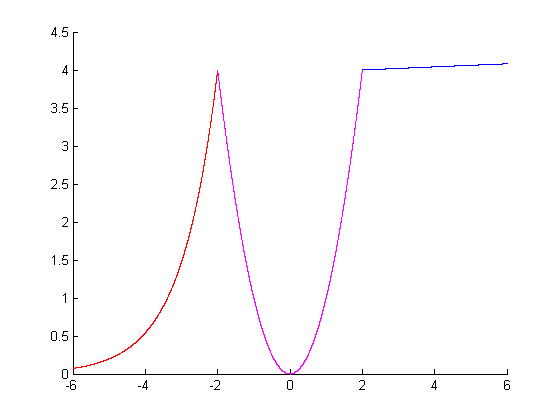
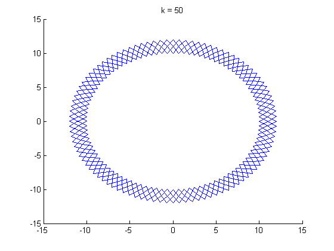

Contents
clc ; format compact ;clear all;
ex_1
clc;
figure(1) ;
hold on ;
for (x=-6:0.001:6 )
if ( (-6<=x)&(x<=-2) )
y1 = 4*exp(x+2) ;
plot(x,y1,'r');
elseif ( (-2<=x)&(x<=2) )
y2 = x^2 ;
plot(x,y2,'m');
else
y3 = (x+62)^(1/3) ;
plot(x,y3,'b');
end
end
hold off;
func1();

ex_2
clc;
a = -30 ;
b = 30 ;
x = round( rand(1,14)*(b-a)+a ) ;
y = downsort(x)
y =
Columns 1 through 13
28 28 27 27 25 24 19 8 3 -1 -13 -21 -22
Column 14
-24
ex_3_a
clc;
disp(['pi/4 = ',num2str(pi/4)] )
m = 0:10 ;
sum = 0 ;
for (i=m)
sum = sum + ( (-1)^i * ( 1/(2*i+1) ) ) ;
end
sum
m = 0:500 ;
sum = 0 ;
for (i=m)
sum = sum + ( (-1)^i * ( 1/(2*i+1) ) ) ;
end
sum
pi/4 = 0.7854
sum =
0.8081
sum =
0.7859
ex_3_b
clc;
disp(['pi/4 = ',num2str(pi/4)] )
m = 10 ;
sum = 0 ;
i = 0 ;
while (i<=m)
sum = sum + ( (-1)^i * ( 1/(2*i+1) ) ) ;
i = i+1 ;
end
sum
m = 500 ;
sum = 0 ;
i = 0 ;
while (i<=m)
sum = sum + ( (-1)^i * ( 1/(2*i+1) ) ) ;
i = i+1 ;
end
sum
pi/4 = 0.7854
sum =
0.8081
sum =
0.7859
ex_4_version_1
clc;
binomV1(1)
binomV1(2)
binomV1(3)
ans =
1
ans =
1 0
1 1
ans =
1 0 0
1 1 0
1 2 1
ex_4_version_2
clc;
binomV2(1)
binomV2(2)
binomV2(3)
binomV2(4)
binomV2(5)
binomV2(7)
ans =
1
ans =
1 0
1 1
ans =
1 0 0
1 1 0
1 2 1
ans =
1 0 0 0
1 1 0 0
1 2 1 0
1 3 3 1
ans =
1 0 0 0 0
1 1 0 0 0
1 2 1 0 0
1 3 3 1 0
1 4 6 4 1
ans =
1 0 0 0 0 0 0
1 1 0 0 0 0 0
1 2 1 0 0 0 0
1 3 3 1 0 0 0
1 4 6 4 1 0 0
1 5 10 10 5 1 0
1 6 15 20 15 6 1
ex_5
clc ;clear all;close all;
diamondGlamour( 50 );

ex_6
clc;close all;
num = input('Please enter a positive int : ');
vec = num:-1:1;
y = 1 ;
j = 1 ;
for (i=vec)
numOfStairs = (2*i-1);
while(numOfStairs)
stair(j-1,y-1,j,y);
j = j+1 ;
numOfStairs = numOfStairs-1 ;
end
y = y+1 ;
j=y;
end
Error using input
Cannot call INPUT from EVALC.
Error in Ex_4 (line 129)
num = input('Please enter a positive int : ');Individual study
clc ;clear all;close all;format long;
ex_7
a)
x1 = linspace(12,23);
p1 = [2,-3,4,1,0,0,1];
y1 = polyval(x1,p1);
plot(y1,'m');
b)
p2 = [1,-13,0,54,-72];
roots(p2)
res1 = polyval(p2, 12.700365230401992 + 0.000000000000000i )
res2 = polyval(p2, 1.324089157177179 - 0.812821616201548i )
c)
clc;
x = -100:100 ;
w = (2.*x+3).*(x+4) ;
p3 = [2,11,12] ;
y = polyval(p3,x);
figure(7);
subplot(2,1,1);
plot(w);
subplot(2,1,2);
plot(y);
res = roots(p3)
ex_8
clc;clear all;close all;format compact;
a1=6;b1=-18;c1=6;
a2=-4;b2=-20;c2=5;
[x1,y1,w1] = maxormin(a1,b1,c1)
[x2,y2,w2] = maxormin(a2,b2,c2)
ex_9
clc ;clear all;close all;format long;
p1 = [1,-1,-19,-11,30];
p2 = [1,6,3,-10,0,0];
p1Roots = roots(p1) ;
p2Roots = roots(p2) ;
res1 = calcPolyByRoots(p1Roots)'
res2 = calcPolyByRoots(p2Roots)'
disp('Yes, the same...')
ex_10
clc ;clear all;close all;format long;
a)
clc ;clear all;close all;format long;
p1 = [15,35,-37,-19,41,-15];
p2 = [5,0,-4,3];
[q,r] = deconv(p1,p2)
b)
clc ;clear all;close all;format long;
p1 = [3,6,9];
p2 = [1,2];
conP1P2 = conv(p1,p2)
derivativeOf_conP1P2 = polyder(conP1P2)